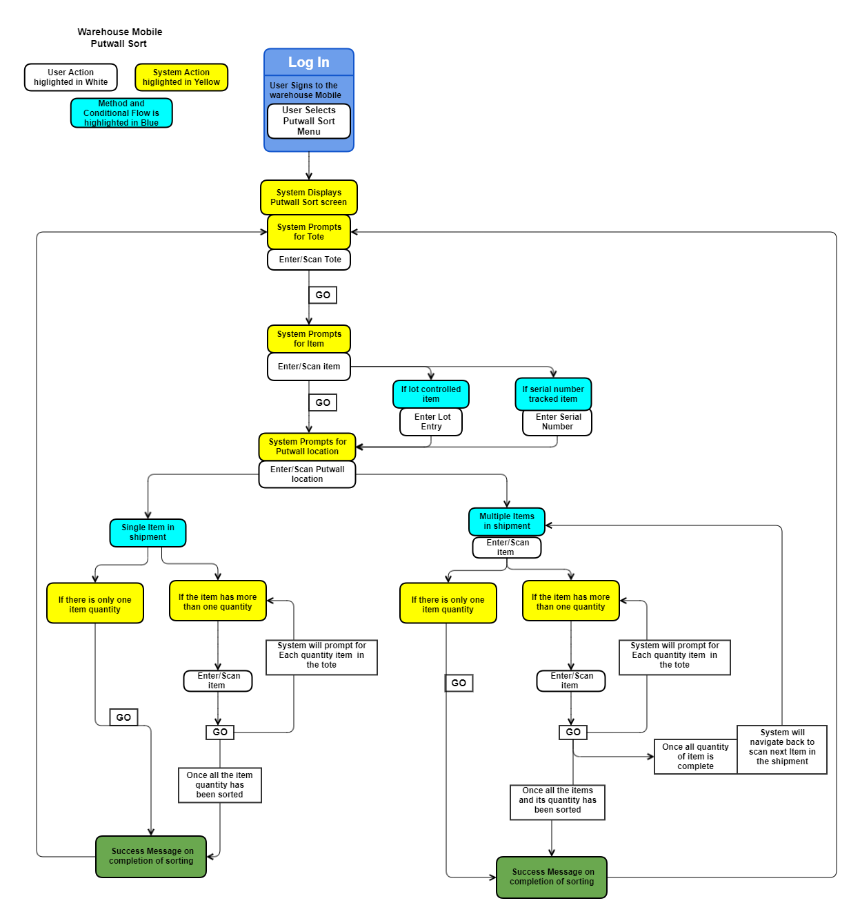
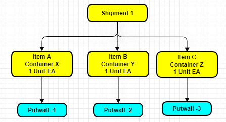
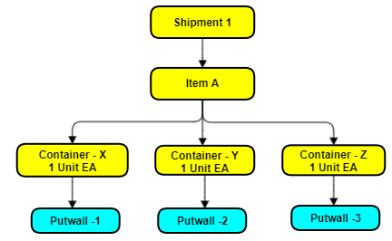

Warehouse Mobile - Putwall Sort
The putwalls are a set of cubbies used for sorting item inventory batches picked in the totes. Orders are batch picked to a tote and are directed to Putwalls to sort the inventory in the batch picked Tote. The totes can be continuously sorted at a Putwall as totes keep arriving.
What is a Putwall
A put-wall are cabinet structure that are divided into a series of compartments, known as cubbies or putwall location. In a daily industry scenario, one side of putwall has a user who sorts and puts the products into the assigned cubbies/putwall location for their respective shipments or containers. The other side of the putwall location will have users who will pack these shipments or containers.
Topics Discussed
Configurations
Set the following configurations for putwall sort.
Location - Read Putwall location.
Create a new location with location class as Putwall.
These locations will represent the putwall sort locations in the warehouse. However, these locations will not be inventory tracked or displayed on search in the Inventory insight screen.
Work profile - Select Pick to tote and Sort picked quantity check box in the work profile configuration.
Screens Flow - 290 - Putwall Sort . Click for more information
Perform Sort by Shipment
Sort the items by shipment to putwall location.
- Log in to the Warehouse Mobile application.
- Select the Putwall Sort option from the Warehouse Mobile Main Menu.
- Enter/Scan the Tote ID.
- Enter/Scan the Item. The Shipment ID and tote details are displayed.
- Users can tap i (information) icon to view Item and Shipment details.
- Enter Putwall location. Tap Go to view the success message for the item sorted to the putwall location.
- The system will prompt for next item. Enter Item and system now will not prompt for putwall location.
- When one item of the shipment is sorted to a putwall location, then all the remaining items of that shipment will be associated with the same putwall location.
- User can also enter/scan Item cross reference.
- If there are multiple items, then user can enter the next item, and repeat the 6 step.
- Choose Cancel to stop the sorting and navigate back to the Tote entry screen.
-
When all the items have been sorted, the system will display a success message, indicating that all the sorting is completed for this shipment.
Note: Configure the Receiving preference to enable multiple unit sorting. Sort multiple units of an item into a putwall, with the default flow is single unit sort.
Perform Sort by Container
Sort the items by container to putwall location.
- Log in to the Warehouse Mobile application.
- Select the Putwall Sort option from the Warehouse Mobile Main Menu.
- Enter/Scan the Tote ID.
- Enter/Scan the Item. The Container Type details are displayed.
- Users can tap i (information) icon to view container details like Container ID, Shipment ID, Item and Description.
- Enter Putwall location. Tap Go to view the success message for the item sorted to the putwall location.The system will prompt for the next item. Enter Item and system now will not prompt for putwall location.
- When one item in the tote is sorted to a putwall location, then all the remaining items will be associated with the same putwall.
- Users can also enter/scan Item cross reference. If there are multiple items, then swipe the slider to select the item.
- If there are multiple items, then users can enter the next item, and repeat the 6 step.
- Choose Cancel to stop the sorting and navigate back to the Tote entry screen.
- When all the items have been sorted, the system will display a success message, indicating that all the sorting is completed for this container.
Process Flow
The putwall sort is performed by shipment or container. The system will determine the flow based on the shipment or container work. If container quantity is picked into tote, then sort by container is initiated, similarly if shipment quantity is picked into tote, then sort by shipment is initiated.
The process flow is detailed below

1. Sign in to Warehouse Mobile
User signs into the Warehouse Mobile application on the device. The user is now ready to putwall sort the items into the putwall locations (cubbies).
2. Tote information
The user will have to enter the tote id. The work units are consolidated to the tote for sorting using the pick to tote feature.
Enter/Scan the tote ID and the system will prompt user to scan/enter the item.
3. Item scan/enter
User enter/scan the item that needs to be sorted in the putwalls.
- If the items are lot controlled, then the system will prompt for Lot entry details.
- If the item is serial number tracked, then the system will prompt for serial number details.
- If an item has a cross-reference, then select the item from the slider.
- Items with multiple companies are supported.
Once the item details have been entered, the system will prompt for putwall location. Users enter the putwall location.
4. verification
The system will reference any work special handling record, to identify any unique handling requirements of this item. A special handling record defines processing validations or restrictions required for a certain item.
- Location, check digit verification is supported.
5. Sort the items
Start the sorting Process: Tap GO. The system will sort the item to the tote and a successful message is displayed. Once all the items on a tote are sorted system shows a success message indicating that the sorting is complete for the shipment. The system writes the transaction history and labor record for each quantity sorted.
Users can sort multiple units of an item into a putwall, with the default flow being single unit sort. Configure your shipping preference to enable multiple unit sorting.
Notes
Following notes to be considered for both sort by shipment and container is performed.
- Sorting will be done for one quantity at a time and the UM should be the base unit of measurement. For example, if you have one item with 5 quantities, then sorting will be performed 5 times.
- Tote information - The tote information displayed will depend on the following scenarios
When we have a tote that contains a single shipment with multiple details for the same item/company. The sum of the quantity of all the details will be displayed. For example, we have Line 1 - 3 Each (EA) and Line 2 = 8 Each (EA), then 10 EA quantity is displayed to be sorted for the tote.
When we have a tote that contains multiple shipments with multiple details for the same item/company. The sort quantity for each shipment will be displayed. Once you complete the sort of one shipment, the system will move to the next shipment.
- When we have a tote that contains the same item with a different company, the system will prompt for selection.
- The system will not prompt for a serial number when sorted by shipment.
- Item cross reference for the item can be entered/scanned. If there are multiple items configured, the system will display a slider screen to swipe and select the item to be sorted.
- Lot controlled items - The system will prompt users to enter the Lot ID during sorting the item.
- Users can validate the Location and Check Digits verification on the putwall location configuration.
- Putwall location Status
- The status will be Empty before sorting. When one item is successfully sorted to the location, the status changes to Storage.
- When all the sorted items are cleared from the putwall (cubbie), the status will be changed to Empty.
Examples
The putwall sort by container and shipment scenarios are illustrated below
 Example 1
Example 1
A Single shipment having multiple items and multiple containers
The Shipment 1 has the following items and container
- Item A in Container X with 1 unit each
- Item B in Container Y with 1 unit each
- Item C in Container Z with 1 unit each
When the User performs a putwall sort for the shipment 1, then the system will sort each item and container to different putwall location.

On Sorting:
Item A in Container X with 1 unit each – Sorted to Putwall 1
Item B in Container Y with 1 unit each - Sorted to Putwall 2
Item C in Container Z with 1 unit each - Sorted to Putwall 3
Example 2
A single shipment having same item in multiple containers
The Shipment 1 has one Item A in all the containers
- Item A in Container X with 1 unit each
- Item A in Container Y with 1 unit each
- Item A in Container Z with 1 unit each

On Sorting:
Item A in Container X with 1 unit each – Sorted to Putwall 1
Item A in Container Y with 1 unit each - Sorted to Putwall 2
Item A in Container Z with 1 unit each - Sorted to Putwall 3